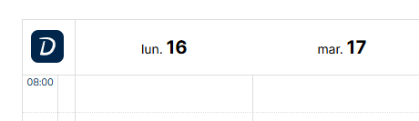
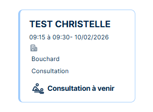
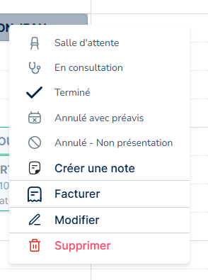
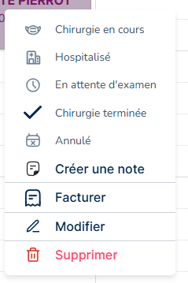
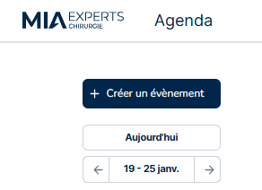
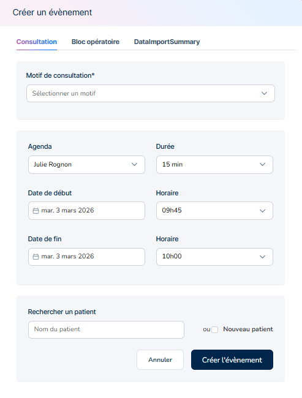
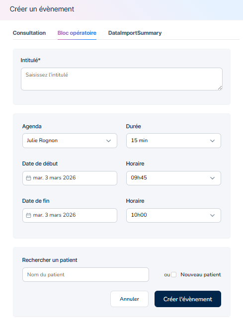

Agenda
L’agenda est le point central de l’activité quotidienne dans MIA Experts.
Il permet de visualiser, créer, modifier et suivre l’ensemble des consultations, actes opératoires et absences, tout en assurant le lien avec le dossier patient, la facturation et le parcours de soins.
L’agenda agit ainsi comme un point d’entrée vers l’ensemble des fonctionnalités cliniques et administratives.
MIA Experts intègre un agenda synchronisé avec Doctolib (si vous avez déjà un abonnement auprès de leur plateforme). Tous les rendez-vous pris sur Doctolib y apparaitront. Les informations du patient y seront reportées

La synchronisation avec Doctolib s'effectue en cliquant sur le bouton dédié : ce connecteur permet l'affichage instantané des rendez-vous pris depuis la solution Doctolib sur l'agenda MIA.

À savoir : la synchronisation fonctionne dans un sens uniquement — les rendez-vous créés dans MIA n'alimentent pas les rendez-vous dans Doctolib.
Le modèle de rendez-vous est identique à celui de Doctolib, avec la possibilité de personnaliser la couleur selon le type de rendez-vous.
Le survol avec la souris d'un rendez-vous affiche une synthèse du patient comprenant :
- l'identité du patient,
- le motif de consultation ou l'intitulé de l'opération,
- le lieu de consultation
- une note clinique rapide,
- le statut du patient (en consultation, vu, non facturé, etc.).
Cette vue permet une prise d'informations immédiate sans avoir à ouvrir le dossier patient.

Un clic droit sur un rendez-vous ouvre un menu contextuel donnant accès aux actions principales :
- Changement de statut du patient selon le type d'évènement
- Annulation (excusée ou non),
- Création ou modification de la note associée,
- Accès à la facturation,
- Modification ou suppression du rendez-vous.
Ce menu permet de gérer rapidement le déroulé de la consultation sans avoir à quitter l’agenda.

Le menu du clic droit s'adapte en fonction du type de rendez-vous, ici le bloc opératoire :

Pour plus de lisibilité, l'agenda dispose de deux couleurs afin de distinguer les rendez-vous de consultations (en bleu) et les blocs opératoires (en rose).

En cliquant sur le rendez-vous le dossier du patient s'ouvre sur l'évènement (consultation ou bloc opératoire)
La création du rendez-vous peut se faire manuellement de deux manières
En cliquant directement sur le créneau souhaité dans l'agenda
Ou via le bouton Créer un évènement en haut à gauche

L'utilisateur renseigne :
- le motif (consultation ou bloc opératoire),
- le praticien concerné,
- la durée,
- la date et les horaires,
- le patient (recherche d'un patient existant ou création d'un nouveau patient).
Une fois validé, l'événement apparaît immédiatement dans l'agenda.

